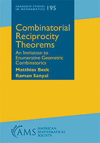

|
Combinatorial Reciprocity Theorems: An Invitation To Enumerative Geometric Combinatorics is a book by Matthias Beck and Raman Sanyal published in 2018 in the Graduate Studies in Mathematics series of the American Mathematical Society. A combinatorial reciprocity is a curious phenomenon: A polynomial, whose evaluations at positive integers count combinatorial objects of some sort, may give the number of combinatorial objects of a different sort when evaluated at negative integers (and suitably normalized). Such combinatorial reciprocity theorems occur in connections with graphs, partially ordered sets, polyhedra, and more. With combinatorial reciprocity theorems as a leitmotif, this book unfolds central ideas and techniques in enumerative and geometric combinatorics. Written as an accessible graduate textbook with almost 300 exercises, numerous illustrations, and pointers to the research literature, topics include concise introductions to partially ordered sets, polyhedral geometry, and rational generating functions, followed by highly original chapters on subdivisions, geometric realizations of posets, and hyperplane arrangements. The final version of our manuscript is here. A few errata are here.
Excerpts from Reviews
"Nearly half a century [after Stanley's paper "Combinatorial reciprocity theorems"], the book
under review pays a loving ode to Stanley's paper and extends it to over 300 pages, forming
a comprehensive work of reference to combinatorial reciprocity theorems old and new.
This book is a cleverly and beautifully woven tapestry, however, and the combinatorial
reciprocity theorems make it both possible and necessary to introduce enumerative and
geometrical combinatorics more generally. Among the interconnecting subtopics are classes of
combinatorial polynomials, partially ordered sets, polytopes and the Euler characteristic,
rational generating functions, hyperplane arrangements, and many more.
Accessible to undergraduate students--who are helped along by a wealth of interesting
problems (though no solutions) at the end of each chapter--and an invaluable work of
reference for researchers, this is an impressive and beautifully written book. It shines
with clarity and the authors' evident joy, in the beautiful maths at hand and in the
authors' delivery of it to the reader."
"This book presents these combinatorial reciprocity theorems and a number of others that have
a geometric origin, as is made clear by the subtitle of the book. [...] They rephrase various counting problems in terms of
polyhedral geometry, and then prove combinatorial reciprocity phenomena in this setting. The
content of this book thus illustrates the fact that geometry can help shed light on a number
of problems that have a priori a purely combinatorial nature.
[...] All in all, the authors gather numerous topics in a single impressive work, and
organize the material in a very engaging and unique fashion."
"Consider a combinatorially defined polynomial, like the chromatic polynomial fG(n) of a
graph G. For each positive integer n, the value of that polynomial is the number of ways to color
the vertices of G so using only colors 1,2,...,n so that adjacent vertices are of different color.
(It is not difficult to prove that fG is indeed a polynomial function.) However, why
would we obtain anything meaningful if we plug in a negative integer into our polynomial? It turns
out that plugging in -1, we get, up to sign, the number of acyclic orientations of G.
This is a spectacular example of a combinatorial reciprocity theorem--when a combinatorially defined polynomial takes combinatorially meaningful values even for negative integers. In the first chapter of this reader-friendly book, the authors announce four such theorems that they will prove later in the book. In the next three chapters, they review diverse areas they will need: partially ordered sets, polyhedral geometry, and rational generating functions. Readers familiar with one of these topics can skip that chapter without getting into trouble in the others.
Then come three advanced chapters that should be read in sequence: subdivisions, geometric aspects of partially ordered sets, and finally, hyperplane arrangements. These are at least at advanced graduate student level.
Given how diverse that list of topics is, it is not a surprise that so far readers had to scan many
sources to find all these results, and now the book collects them in one place. There are plenty of
exercises, though none of them have solutions. While the format of the book makes it appropriate as
a textbook, the wide array of included topics makes this reviewer think that most readers will use
the book as a reference manual."
|  |
"First, it is necessary to study the facts, to multiply the number of observations, and then later to search for formulas that connect them so as thus to discern the particular laws governing a certain class of phenomena. In general, it is not until after these particular laws have been established that one can expect to discover and articulate the more general laws that complete theories by bringing a multitude of apparently very diverse phenomena together under a single governing principle."
Augustin Louis Cauchy